Step-by-Step Beginner Walkthrough
Starting out in Tyria drops you into twenty years of layered systems, three full campaigns, and hundreds of skills with minimal hand-holding. Follow these steps in exact numerical order from character creation through Pre-Searing Ascalon, the Lion's Arch power spike, and full four-campaign progression so you never stall out, waste gold on dead-end gear, or lose track of what comes next.
Phase 1 · Character Creation, First Settings & Ascalon Gate (Levels 1 to 3) 0/0 (0%)
This opening sequence establishes one clean starting path using Prophecies with Reforged Mode enabled, tunes the HUD before your first fight, and sets up your primary Elementalist skills and first inventory pouch.
-
Step 1. Create a Roleplaying Character (bottom-left choice at character creation). PvP-Only characters stay locked on the Battle Isles and skip all PvE campaigns.
-
Step 2. Choose Prophecies as your starting campaign and pick
 Elementalist as your Primary Profession. Prophecies gives you Pre-Searing Ascalon as a relaxed tutorial playground while Reforged Mode speeds up rewards and adds early Heroes.
Elementalist as your Primary Profession. Prophecies gives you Pre-Searing Ascalon as a relaxed tutorial playground while Reforged Mode speeds up rewards and adds early Heroes.
-
Step 3. Customize your appearance, enter a name (single words of 3+ letters or multi-word names are valid), and on the bottom-left checkboxes check Reforged Mode (
 ). Leave Dhuum's Covenant and Melandru's Accord unchecked on your first character so you retain full storage, trading, and normal progression.
). Leave Dhuum's Covenant and Melandru's Accord unchecked on your first character so you retain full storage, trading, and normal progression.
-
Step 4. Watch or skip the intro, then press F11 to open Options. Under Graphics / Interface, scale Interface Size to fit your screen, verify Task Tracker is checked, and move any overlapping HUD boxes by clicking Drag/Layout.
-
Step 5. Memorize eight hotkeys right now: C (target nearest enemy), Space (auto-attack / interact with NPC or chest), Left Alt (show item drops and NPC names), Left Ctrl (show allies; Ctrl + Space calls a target for your party), K (Skills and Attributes), L (Quest Log), I or F9 (Inventory Bags), and M (World Map).
-
Step 6. Speak to Sir Tydus beside you to finish Message from a Friend and take War Preparations. Walk forward toward the gate and speak to the Town Crier to accept Getting Started in Guild Wars immediately before doing any other profession quests. Also speak to Sandre Elek inside the courtyard to take The Wayward Wizard.
-
Step 7. Walk south through the open gate of Ascalon City into Lakeside County. Cities and Outposts are shared social hubs where you build parties and use storage; stepping through the portal puts your party into its own private instanced Explorable Area.
-
Step 8. Just outside the gate, turn in War Preparations to Howland the Elementalist and accept Elementalist Test. Press 2 to cast
 Aura of Restoration before engaging, then follow the road southwest to the river and cast
Aura of Restoration before engaging, then follow the road southwest to the river and cast 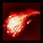
Flare (1) on River Skale until you loot 1 Shimmering Scale and 5 Skale Fins. -
Step 9. Return to Howland the Elementalist to claim your reward (500 XP, 25g, Flare, andAura of Restoration) plus Further Adventures. Walk a few steps north toward the gate to Collector Brownlow and trade your 5 Skale Fins for a Belt Pouch (+5 inventory slots). Press F9 and double-click the Belt Pouch to equip it.
-
Step 10. Press K to open Skills and Attributes. Put your early Attribute Points into Fire Magic (raise to 4) and Energy Storage (raise to 2). Raising an attribute directly increases the damage and duration of all skills linked to it.
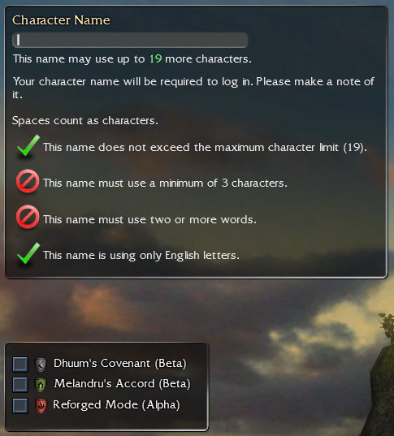
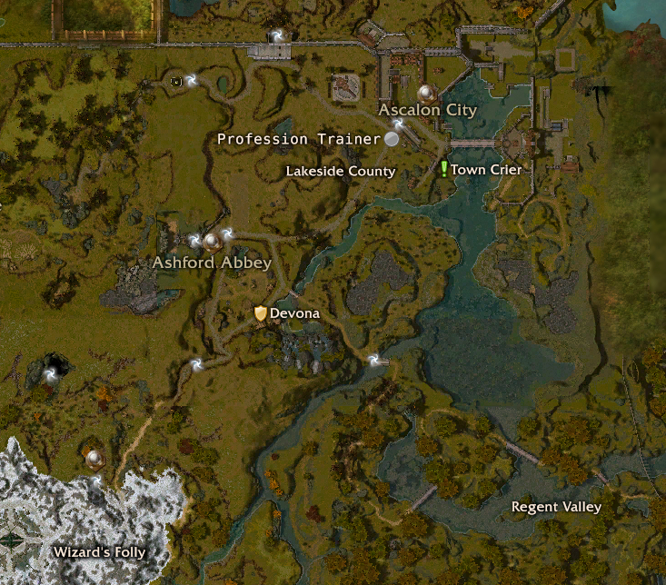
If you picked another Prophecies starter profession in Step 2
 Warrior: Turn in War Preparations to Master Scout Kiera outside the gate for Warrior Test (Frenzy, Healing Signet). Use Frenzy carefully because it doubles damage taken; put early points in Swordsmanship/Axe Mastery and Strength.
Warrior: Turn in War Preparations to Master Scout Kiera outside the gate for Warrior Test (Frenzy, Healing Signet). Use Frenzy carefully because it doubles damage taken; put early points in Swordsmanship/Axe Mastery and Strength.- Ranger: Speak to Arthen the Ranger for Ranger Test (
 Power Shot,
Power Shot,  Troll Unguent). Visit Master Ranger Nente inside Regent Valley soon for Charm Animal and tame a Melandru's Stalker pet.
Troll Unguent). Visit Master Ranger Nente inside Regent Valley soon for Charm Animal and tame a Melandru's Stalker pet.  Monk: Speak to Ciglo outside the gate for Monk Test, then prioritize The Blessings of Balthazar (
Monk: Speak to Ciglo outside the gate for Monk Test, then prioritize The Blessings of Balthazar ( Symbol of Wrath) at Ashford Abbey so you have offensive Smite damage.
Symbol of Wrath) at Ashford Abbey so you have offensive Smite damage. Necromancer: Speak to Verata for Necromancer Test (Deathly Swarm, Vampiric Gaze), then pick up The Power of Blood outside Ashford Abbey.
Necromancer: Speak to Verata for Necromancer Test (Deathly Swarm, Vampiric Gaze), then pick up The Power of Blood outside Ashford Abbey. Mesmer: Speak to Sebedoh for Mesmer Test (
Mesmer: Speak to Sebedoh for Mesmer Test (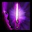
Empathy) and immediately buy or quest for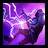
Backfire and an Elementalist secondary so Pre-Searing enemies die quickly.
Phase 2 · Free Skill Quests, Monk Secondary & Collector Armor (Levels 3 to 6) 0/0 (0%)
Guild Wars unlocks skills through quests rather than level-ups. Collecting every free Elementalist and Monk quest spell in Pre-Searing Ascalon gives you Area-of-Effect fire damage, blinding shutdown, self-healing, and full collector armor before ever buying anything from a merchant.
-
Step 11. Follow the road southwest out of Lakeside County to the village of Ashford. Step into the Ashford Abbey portal once to unlock its map-travel icon, then exit back out to Lakeside County.
-
Step 12. Speak to Devona right outside Ashford Abbey to turn in Further Adventures and accept Unsettling Rumors. Follow the green star south into the crypt area, speak to Necromancer Munne, return to Devona, and accept A Second Profession. Do not finalize a secondary profession with Armin Saberlin yet so you can sample skill quests first.
-
Step 13 (Solo Keepsake). While standing near Ashford while completely solo, obtain Gwen's Tapestry Shred for later use in Eye of the North. Gather 3 Red Iris Flowers around Lakeside County, pick up the Broken Flute lying near the ruined bridge west of Ashford, buy a new Flute (100g) from a merchant inside Ascalon City or Ashford, and hand Gwen the Broken Flute, new Flute, and 3 Red Iris Flowers. Drop any leftover Red Iris Flowers on the ground momentarily and talk to Gwen once more to receive the Tapestry Shred, then pick your dropped flowers back up.
-
Step 14. From Ashford, take the southwest snow-lined path into Wizard's Folly and walk south into the Foible's Fair outpost to unlock it on your map. Speak to Ralena Stormbringer inside Foible's Fair to advance The Wayward Wizard and accept The Supremacy of Air (which grants Lightning Javelin and
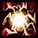
Blinding Flash). -
Step 15. Step outside Foible's Fair into Wizard's Folly. First follow the northeast road to the cottage to speak with Orion and convince him to return (The Wayward Wizard). Then follow the southern path up to the tall wizard's tower, destroy the patrolling Tower Golem with Lightning Javelin, and turn in The Supremacy of Air to Elementalist Aziure right beside the tower.
-
Step 16. Immediately accept The Elementalist Experiment from Elementalist Aziure. Defeat the incoming Ice Elemental Shards with your newly granted
 Fire Storm and Glyph of Lesser Energy, then talk to Aziure to keep both spells. Open your World Map (M), click Ascalon City, click Travel, and turn in The Wayward Wizard to Sandre Elek for a free Air Staff (Energy +3). Double-click it to equip.
Fire Storm and Glyph of Lesser Energy, then talk to Aziure to keep both spells. Open your World Map (M), click Ascalon City, click Travel, and turn in The Wayward Wizard to Sandre Elek for a free Air Staff (Energy +3). Double-click it to equip.
-
Step 17. Map-travel to Ashford Abbey and speak to Brother Mhenlo. Complete A Monk's Mission inside the Catacombs to chooseMonk as your Secondary Profession (E/Mo), then accept and clear The Blessings of Balthazar right outside Ashford Abbey (unlocks Symbol of Wrath). Next walk southeast from Lakeside County into Green Hills County and speak to Grazden the Protector for Protection Prayers (Reversal of Fortune and Shielding Hands).
-
Step 18. Map-travel back to Ascalon City, speak to Armin Saberlin to lock in A Second Profession, and speak to the Town Crier to claim Getting Started in Guild Wars (500 XP, 100g). Walk south through Lakeside County to Regent Valley, enter Fort Ranik to unlock the outpost, and complete Adventure with an Ally outside Ascalon City with any other player or by speaking to the quest guard to earn
 Resurrection Signet.
Resurrection Signet.
-
Step 19. Upgrade every Pre-Searing armor piece for zero gold by trading enemy trophy drops to Collectors: Hatcher in Regent Valley (5 Unnatural Seeds from plants for Chest armor), Mindle in Wizard's Folly (3 Enchanted Lodestones from Ice Elementals for Gloves), Varis in Green Hills County (3 Spider Legs for Leggings), and Karleen in The Catacombs (5 Gargoyle Skulls for Shoes).
-
Step 20. Press K inside any town and set your exact Level 6 E/Mo Skill Bar and attributes (Fire Magic 7, Energy Storage 4, Protection Prayers 2): cast Glyph of Lesser Energy right beforeFire Storm to make your big AoE spell nearly free.
1. Aura of Restoration2. Glyph of Lesser Energy3. Fire Storm4. Flare5. Lightning Javelin6. Blinding Flash7. Reversal of Fortune8. Res Signet
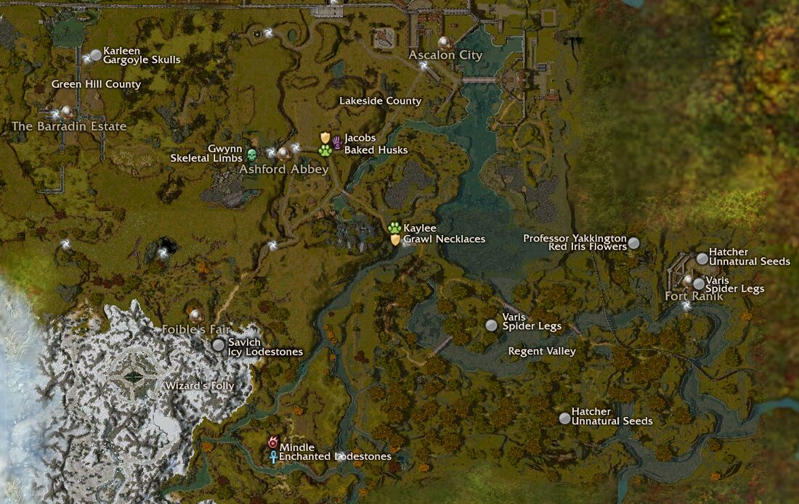
Recommended Secondary & Level 6 Bar if you started Warrior, Ranger, Monk, Necromancer, or Mesmer
- Warrior / Monk (W/Mo): Grab Grawl Invasion (
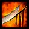
Sever Artery, Gash), The Vineyard Problem, and Monk secondary for Reversal of Fortune +Symbol of Wrath. - Ranger / Warrior or Monk (R/Mo): Complete A Test of Marksmanship and Unnatural Growths; pick Monk secondary for self-healing or Warrior for Frenzy once comfortable.
- Monk / Elementalist (Mo/E): Take Elementalist secondary from Howland/Aziure to run Fire Storm + Glyph of Lesser Energy alongside Symbol of Wrath.
- Necromancer / Monk or Elementalist (N/Mo): Pick up
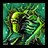
Animate Bone Horror and The Accursed Path, plus Monk secondary for Orison of Healing andResurrection Signet. - Mesmer / Elementalist (Me/E): Lock Elementalist secondary with Aziure so Fire Storm and Flare cover low-cast-frequency enemies while Backfire punishes Charr casters.
Phase 3 · The Northlands, Forsaken Tunnels & Devona Hero Unlock (Levels 6 to 8) 0/0 (0%)
Reforged Mode adds an entire multi-floor dungeon beyond the Great Northern Wall where you unlock Devona as a permanent Hero companion before leaving Pre-Searing Ascalon. Before stepping north, pick up a cheap longbow strictly as a pulling tool so Charr groups fight you one pack at a time.
-
Step 21. Clear quick Regent Valley and Lakeside County quests (Charr at the Gate with Prince Rurik, Poor Tenant, The Orchard, and Charr in the Catacombs) until Level 6, then equip any cheap white Longbow or Flatbow into Weapon Slot F2 (leaving your Air Staff in F1). On your compass (U), the white ring around you is your Aggro Circle. Switch to F2, fire a single arrow at one enemy from max bow range, switch back to F1, and run backward so only that group chases you into clean ground.
-
Step 22. Accept Across the Wall from Captain Osric in Ascalon City. Exit into Lakeside County, follow the road northwest to the Great Northern Wall, climb the ramp on the right to pull the Lever opening the portcullis, step into The Northlands, and escort Ben Wolfson south back through the gate.
-
Step 23. Inside Lakeside County, wait beside the gate while Ben Wolfson finishes two lines of dialogue, then acceptA Bastion In the North from him. Immediately map-travel (M) to Ascalon City and turn in Across the Wall to Captain Osric before heading back north. Active Across the Wall flags prevent Devona and her allies from spawning in The Northlands.
-
Step 24. Walk back up through the Wall lever into The Northlands and meet Devona, Vell, and Bock. Pull Charr groups carefully using your F2 Longbow so Devona survives, clear the four packs inside Piken Square, then hold the stairs against two Charr Hunters and boss Scarl the Slicer. Map-travel to Ascalon City and report to Prince Rurik to unlock the Piken Square (Pre-Searing) outpost.
-
Step 25. Map-travel to Piken Square (Pre-Searing) and speak to Adept Mullenix forLong Thought Forgotten. Exit Piken Square's north gate, follow the Charr camp path northeast to the eastern cave entrance, enter Forsaken Tunnels, avoid stepping on blue crystalline floor patches (which inflict Crippled and Dazed), and walk close to the southern Dungeon Lock until your character speaks before taking the north exit. Once outside, ignore the Northlands marker and map-travel straight back to Piken Square to turn in to Mullenix.
-
Step 26. AcceptCharr in the Tunnels from Lieutenant Greywind in Piken Square. Take the now-open western cave entrance just northeast of Piken Square, bow-pull boss Wyle Brimscourge solo on Floor 1 to drop the Dungeon Key, open the Dungeon Lock to Floor 2, eliminate all three pairs of Charr Patrol Stalkers on the northern side, and map-travel back to Greywind.
-
Step 27. AcceptThe Scourge Beneath from Devona in Piken Square. Use the western entrance again, take the Dungeon Key from Wyle Brimscourge on Floor 1, kill the Shard Elementals in the far northeastern tunnel of Floor 2 to carry their Elemental Crystal bundle to the Floor 2 crystal gate, pick up the Boss Key on the southwestern walkway overlook on Floor 3, and defeat Maz Scourgeheart across three elemental phases (carrying each Elemental Keystone dropped by his Shard Elementals to unlock his crystal gates). Open Maz's Chest for an inscribable weapon drop and speak to Devona in Piken Square to permanently unlock Devona as a Hero.
-
Step 28. Check Pre-Searing Missables if you plan to chase Level 20 Legendary Defender of Ascalon on this character; once ready to leave Pre-Searing permanently, map-travel to Ascalon City, speak to Sir Tydus for The Path to Glory, and complete the Ascalon Academy mission.
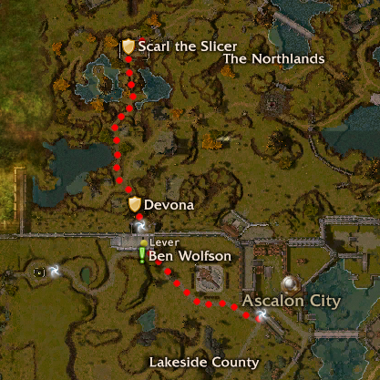
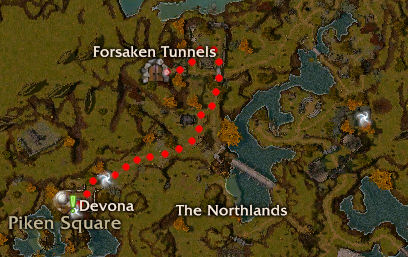
Phase 4 · Post-Searing Ascalon, Ghost of Althea & Northern Shiverpeaks (Levels 8 to 14) 0/0 (0%)
Surviving the Searing turns Ascalon into a real party-based RPG. Your first five minutes in ruined Ascalon City hand you Reforged Mode's starter pack, unlock account-wide Xunlai Storage, introduce Heroes and Henchmen, and open the trail toward Ghost of Althea and the Shiverpeaks crossing to Kryta.
-
Step 29. Speak immediately to Warmaster Tydus right in front of you in Post-Searing Ascalon City to accept and turn inSurviving After the Searing. You receive 1,000 XP, 500g, 4 Skill Points, a Belt Pouch, a 5-slot Bag, a Superior Identification Kit, a Superior Salvage Kit, and 2 Ascalonian Keys. Press F9 and equip the new Bag right away.
-
Step 30. Speak to the Xunlai Agent in Ascalon City and pay 50g to unlock account-wide Xunlai Storage (4 panes plus a Material Storage tab). Follow one strict loot rule from here onward: buy regular white Salvage Kits (100g) from a merchant for salvaging white/blue junk into crafting materials and save your Superior Salvage Kit strictly for extracting Runes or Insignias; identify blue/purple/gold weapons with an Identification Kit before selling them to merchants for more gold. Use the one-click Deposit Materials button in your Inventory whenever materials pile up.
-
Step 31. Press P to open your Party Window (4-member limit in Ascalon). Click the Heroes button to add Devona (give her a cheap hammer or sword if empty, and keep her Hero AI stance set to Guard), then walk over to the Henchmen standing near the city exit and add Alesia (Healer) and Reyna (Archer). Press Ctrl + Space on enemy Healers (like Charr Shamans) at the start of every pull so Devona and your Henchmen focus-fire them first.
-
Step 32. Step out into Old Ascalon toward Sardelac Sanitarium and complete two fast skill quests: Helping the People of Ascalon (Lava Font) and Caravan in Trouble (
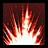
Fireball), plus turn in The Krytan Ambassador to Ambassador Zain forToward the Front Lines (+500 XP, +200g back in Ascalon City). Swap Fireball into slot 4 over Flare and Lava Font into slot 6 over Blinding Flash.
-
Step 33. Talk to Armorer Corwen inside Ascalon City and craft full Armor Rating (AL) 30 Elementalist Armor (300g + 14 Bolts of Cloth total; buy extra Bolt of Cloth from the Material Trader in town if short). Skip the starter AL 15 armorer Banoit and do not spend gold on intermediate AL 39/45 armor later, because AL 30 holds smoothly all the way to Lion's Arch.
-
Step 34. Clear the four Post-Searing Ascalon Cooperative Missions in order (click Start Mission at the top of your screen when inside each Mission Outpost, and see Campaigns for Bonus Objectives yielding +1,500 XP and +150g each in Reforged Mode): accept Defend the Wall from Warmaster Tydus -> enter and clear 1. The Great Northern Wall -> travel to Fort Ranik and clear 2. Fort Ranik -> take Ruins of Surmia quest in Frontier Gate -> clear 3. Ruins of Surmia -> clear 4. Nolani Academy (arriving in Yak's Bend).
-
Step 35. Around Level 10–12 (right after Nolani Academy, or via Piken Square northeast from Old Ascalon), unlock your first Mesmer Hero, Ghost of Althea: in Piken Square speak to Duke Barradin for The Duke's Daughter -> Althea's Ashes (located south in The Breach). Then walk south into The Breach to acceptElegy for Those Left Behind from Ghost of Althea, enter Tunnels of the Forsaken, clear non-respawning Spirits around each of the three pyres first, then stand inside each pyre ring until lit.
-
Step 36. Return to Piken Square, acceptThe Cost of Survival from Kopp the Quick, re-enter Tunnels of the Forsaken to deliver supplies to Althea on Floor 1, kill bandits north of her for an Elemental Keystone to open the Floor 2 crystal gate, hug the left paths on Floor 2 to retrieve stolen goods from Duke Willgrove, and map-travel to Piken Square / re-enter to turn in to Althea. Finally take The Dreamer and the Zealot from Ghost of Althea, clear Floor 3, calm the God-touched Grawl, and defeat Varny the Zealot to unlock Ghost of Althea permanently as a Hero.
-
Step 37. Map-travel to Yak's Bend (6-member party cap). Form your squad with yourself, Devona, Ghost of Althea, and three Henchmen (Alesia, Mhenlo or Claude, and Cynn or Stefan). Complete The Way is Blocked -> clear 5. Borlis Pass -> clear 6. The Frost Gate -> travel from Beacon's Perch through To Kryta: Refugees -> To Kryta: The Ice Cave -> To Kryta: Journey's End -> clear 7. Gates of Kryta to step into Lion's Arch.
Phase 5 · The Lion's Arch Power Spike: Max Armor & Hero Blitz (Levels 14 to 20) 0/0 (0%)
Reaching Lion's Arch opens sea routes and Asura Gates to the entire Guild Wars world. Taking one structured detour here catapults your character straight to Level 20, permanent endgame AL 60 Armor, two Signets of Capture, and a full roster of Level 20 Heroes before tackling mid-game missions.
-
Step 38. Inside Lion's Arch: talk to Devona forThe Hero From Ascalon (+100 free XP). Next speak to Firstwatch Sergio and complete Malaquire's Test with Malaquire nearby to receive 2 free copies of
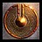
Signet of Capture (the skill used to steal Elite Skills from defeated bosses). -
Step 39. Make sure you are at least Level 10 with 1 free inventory slot. Exit Lion's Arch north into North Kryta Province and speak immediately to the golem M.O.X. standing near the portal to recruit your first Level 20 Hero: M.O.X. (Dervish).
-
Step 40 (Max Endgame Armor in Factions). Back in Lion's Arch, accept Mhenlo's Request from Firstwatch Sergio (and note the Boat Icon on your world map once unlocked). Sail to Bejunkan Pier, escort Mhenlo through Welcome to Cantha into Kaineng Center (8-member party hub), and buy full AL 60 Elementalist Armor from Armorer Suki / Kakumei / Ryoko (4,000g + 175 Bolts of Cloth + 28 Tanned Hide Squares; buy any missing materials from the Kaineng Center Material Trader). From the Rune Trader right beside the crafters, equip 5 Radiant or Survivor Insignias, one Rune of Minor Vigor (+30 HP), one Rune of Minor Fire Magic, and one Rune of Minor Energy Storage.
-
Step 41 (Eye of the North DLC, Omit if Base Bundle Only). Map-travel back to Lion's Arch, accept What Lies Beneath from Len Caldoron, enter the fissure in North Kryta Province with M.O.X., Devona, Ghost of Althea, and Lion's Arch Henchmen, and walk through the Asura Gate into Boreal Station to unlock Level 20 HeroesVekk and Ogden Stonehealer. In Boreal Station, add Vekk, Ogden, M.O.X., and Level 20 Boreal Henchmen, push north via Against the Destroyers into Eye of the North (outpost), and watch The First Vision at the Scrying Pool to unlock Level 20 Mesmer Hero Gwen. (Base-trilogy players without Eye of the North continue straight to Step 42.)
-
Step 42 (Nightfall Core Heroes & Level 20). Map-travel to Lion's Arch, accept Sunspears in Kryta from Lionguard Figo, and sail to Kamadan, Jewel of Istan, immediately unlockingKoss and Dunkoro. Follow the arrival quest chain Battle Preparations -> Securing Champion's Dawn -> A Land of Heroes (which grants Melonni and Tahlkora) -> The Time is Nigh -> complete the Consulate Docks mission.
-
Step 43 (Olias & Acolyte Sousuke). Inside Consulate Docks, accept All for One and One for Justice from Dinja and clear it to unlock Necromancer HeroOlias. Then map-travel to Sun Docks (northeast Istan), speak to Field General Hayao for Zaishen Elite, complete the trial, and choose Student Sousuke (skipping Jin for now) to unlock Elementalist Hero Acolyte Sousuke.
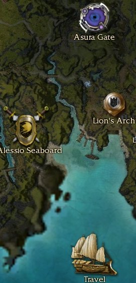
Phase 6 · Rapid Ascension & Assembling the 7-Hero Beginner Team (Level 20) 0/0 (0%)
Unlocking skills for Heroes draws directly from skills unlocked on your account. Ascending at Nahpui Quarter in Factions lets your character change Secondary Professions freely at any Profession Changer so you can buy every skill required by your 7-Hero Beginner Team in one single shopping trip.
-
Step 44 (Ascend in Two Missions). Map-travel to Kaineng Center (Factions), speak to Zunraa or Minister of Maintenance to follow the mainland storyline into Mission 3: Vizunah Square, clear Finding The Oracle -> Closer to the Stars, and complete Mission 4: Nahpui Quarter. Ascending allows you to talk to a Profession Changer NPC (500g) in Kaineng Center, Great Temple of Balthazar, or Senji's Corner to switch your Secondary Profession to Mesmer, Necromancer, and Ritualist whenever buying Hero skills.
-
Step 45 (Skill Shopping Run). Switch secondaries as needed and buy these exact skills for your Heroes (Reforged Mode cuts trainer costs in half, capping at 500g per skill):
- Michiko (Kaineng Center):
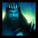
Aegis, Signet of Rejuvenation,
Signet of Rejuvenation,  Shatter Hex, Unnatural Signet.
Shatter Hex, Unnatural Signet. - Pikin (Kamadan Hero Skill Trainer) & Shiloh (Sunspear Great Hall): Spend Hero Skill Points for Signet of Lost Souls and
 Animate Shambling Horror.
Animate Shambling Horror. - Medando (Yohlon Haven, Kourna after Hunted!):
 Mistrust,
Mistrust,  Spiritual Pain (plus
Spiritual Pain (plus  Cry of Frustration,
Cry of Frustration,  Power Drain,
Power Drain,  Drain Enchantment, Empathy, Animate Bone Minions, Death Nova, Protective Spirit, Shield of Absorption, Mend Ailment from Kamadan / Kaineng / EotN trainers).
Drain Enchantment, Empathy, Animate Bone Minions, Death Nova, Protective Spirit, Shield of Absorption, Mend Ailment from Kamadan / Kaineng / EotN trainers). - Micah Fergson (Eye of the North):
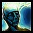
Cure Hex, Patient Spirit,
Patient Spirit,  Masochism. (Base-trilogy substitute without EotN: Orison of Healing and Heal Party/Dwayna's Kiss.)
Masochism. (Base-trilogy substitute without EotN: Orison of Healing and Heal Party/Dwayna's Kiss.)
- Michiko (Kaineng Center):
-
Step 46 (Load 7-Hero Beginner Team). Open Hero Teams, load the 7 Beginner Team templates onto Olias (N/Me), Gwen (Me/Mo), Ghost of Althea (Me/Mo), Vekk (E/Me), Acolyte Sousuke (E/Me), Ogden (Mo/Me), and Dunkoro/Tahlkora (Mo/Me) (swapping in M.O.X. or Melonni if running base trilogy without EotN), and verify every Hero is set to Guard (shields) except Mesmer/Caster backliners if desired.
-
Step 47 (Upgrade Your Elementalist Bar). Visit Player Builds to set up your Level 20 Fire Elementalist loadout. Equip Signet of Capture and capture
 Elemental Attunement (from Koren Wildstaff in Mineral Springs) or Searing Flames (from Zarnas in The Hidden City of Ahdashim), then craft a max Fire Staff (11-22 Fire Damage, Req 9) from a Weaponsmith in Kaineng Center.
Elemental Attunement (from Koren Wildstaff in Mineral Springs) or Searing Flames (from Zarnas in The Hidden City of Ahdashim), then craft a max Fire Staff (11-22 Fire Damage, Req 9) from a Weaponsmith in Kaineng Center.
Phase 7 · Opening Up: Four-Campaign Order & Endgame Transition 0/0 (0%)
With AL 60 endgame armor, Level 20 stats, and a coordinated 7-Hero squad, the entire Guild Wars world opens cleanly. Finish each campaign in this order to claim your remaining 30 Attribute Points, unlock the final three Meta Mesmer/Ritualist Heroes, and transition into Endgame Offensive Mesmerway.
-
Step 48 (Finish Factions). Complete Factions Missions 5 through 12 (Tahnnakai Temple through Imperial Sanctum). Spend accumulated Kurzick or Luxon Faction in Cavalon or House zu Heltzer to learn
 Summon Spirits and
Summon Spirits and  "Save Yourselves!" for your account.
"Save Yourselves!" for your account.
-
Step 49 (Finish Prophecies & 200 Attribute Points). Return to Kryta and complete Prophecies Missions 8 through 25 (D'Alessio Seaboard through Hell's Precipice). Because your character started in Prophecies, complete both native +15 Attribute Point quests to raise your cap from 170 to 200: Forgotten Wisdom (from Sariss Yassith in Skyward Reach, Crystal Desert) and The Hero's Challenge (from Vanyi in Copperhammer Mines, Southern Shiverpeaks). In Ember Light Camp, buy the PvE-only Elementalist spell
 Soul Ignition from Dakk.
Soul Ignition from Dakk.
-
Step 50 (Finish Nightfall & Unlock Norgu / Master of Whispers / Razah). Complete Nightfall Missions 5 through 17 (Venta Cemetery through Abaddon's Gate). Pick Master of Whispers over Margrid the Sly at Kourna (unlocks Necromancer Hero), pick Norgu over Goren in Vabbi (unlocks your third Mesmer Hero alongside Gwen and Ghost of Althea), and clear post-story quest Finding a Purpose / Heart of Abaddon to unlock Ritualist Hero Razah (plus grab Xandra from Gunnar's Hold in EotN).
-
Step 51 (Upgrade to Endgame 7-Hero Offensive Mesmerway). Follow the Boss Capture table on Hero Teams to capture Energy Surge,
 Panic, Blood is Power,
Panic, Blood is Power, 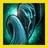
Soul Twisting, and Signet of Spirits, outfit your Heroes with Superior Vigor + Prodigy/Shaman Insignias + 40/40 weapons, and load full 7-Hero Offensive Mesmerway across Gwen, Ghost of Althea, Norgu, Master of Whispers, Olias, Xandra, and Razah. -
Step 52 (Finish Eye of the North DLC & Endgame Goals). Clear the three Eye of the North regional storylines (Ebon Vanguard, Norn, Asura) and A Time for Heroes (Campaigns), bringing your Pre-Searing Tapestry Shred to Gwen in the Hall of Monuments for Then and Now, Here and There. From here, branch into Hard Mode Missions and Vanquishing, weekly Nicholas the Traveler farms, Guild Wars Beyond (War in Kryta, Hearts of the North, Winds of Change), and Elite Areas (Fissure of Woe, The Underworld, Domain of Anguish, Urgoz's Warren, The Deep).